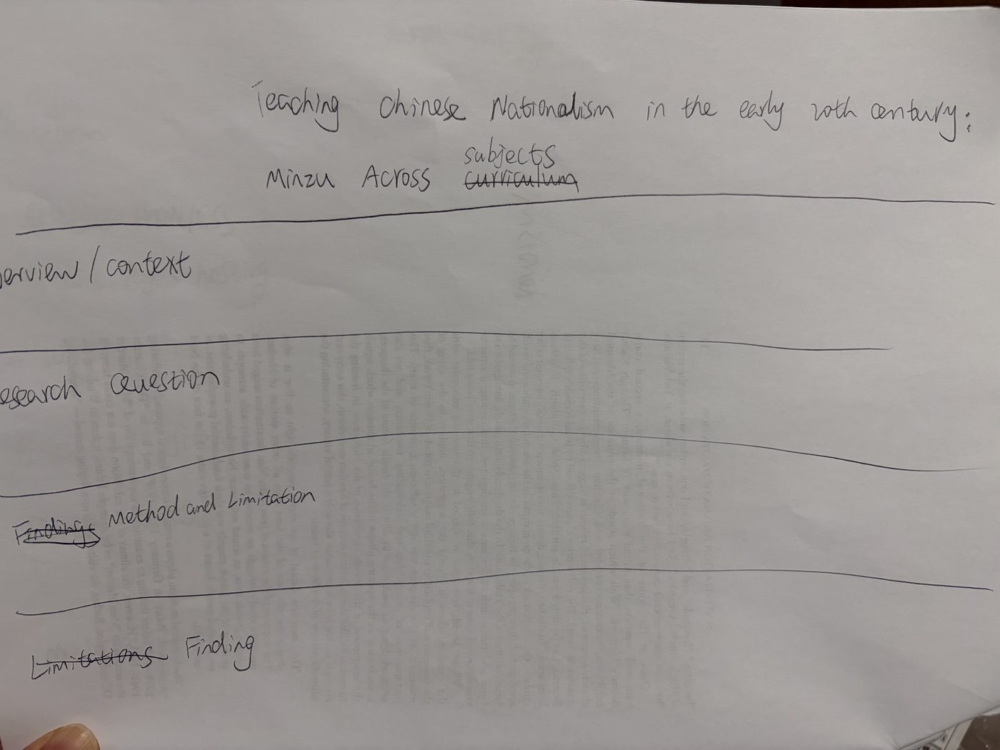
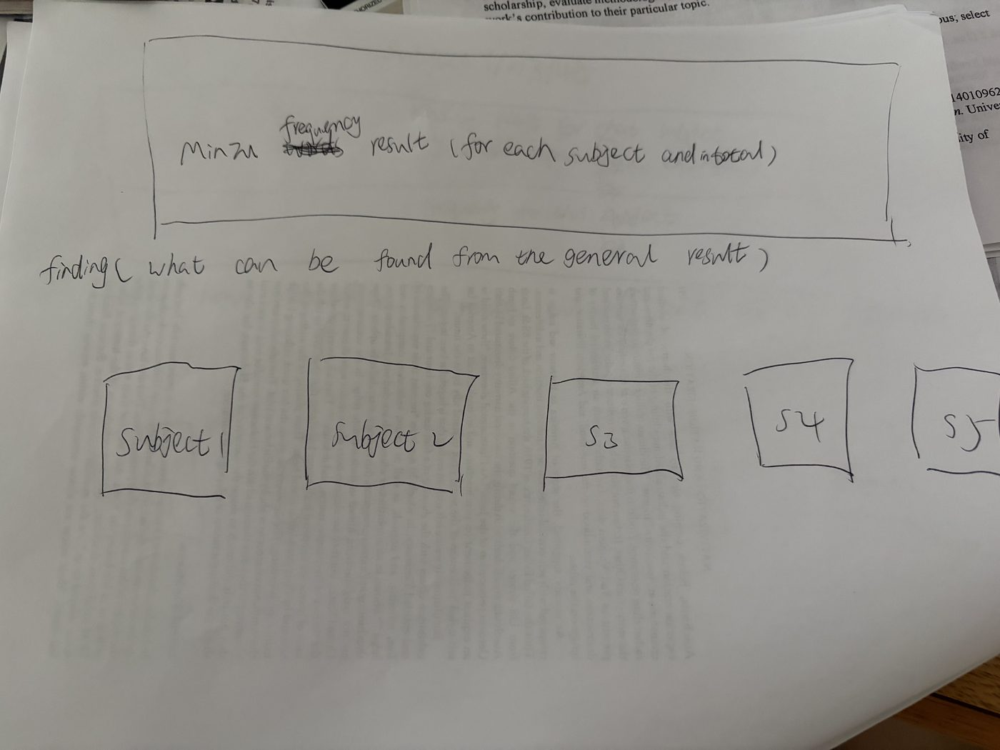
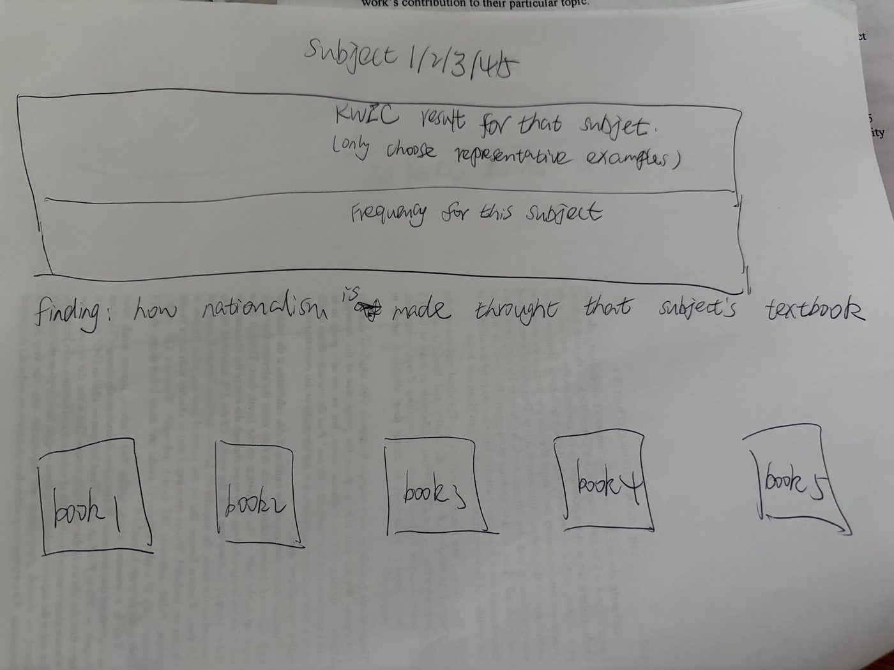
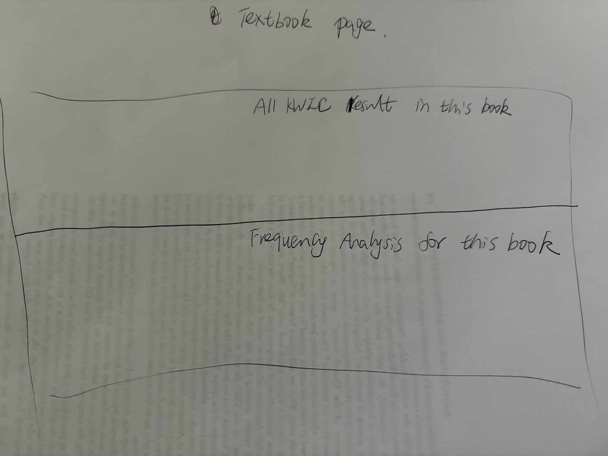
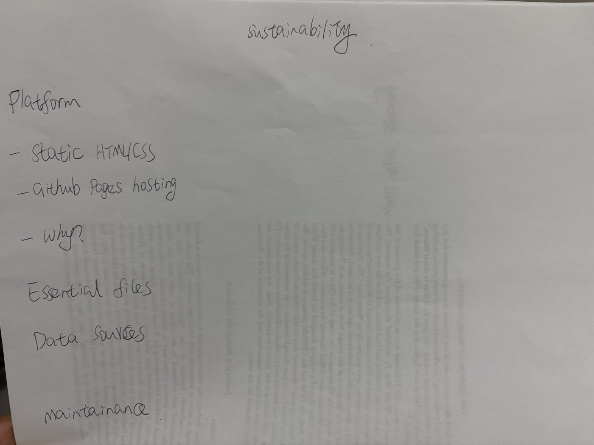

Interface Sketches
Overall Site Structure Sketch

This sketch shows the main reading path of the site. The title frames the project as
a study of teaching Chinese nationalism, while the first sections provide overview,
context, research question, method, and limitations before asking visitors to read the
results. The order matters: the site first explains what the corpus is and why the keyword
matters, then moves into interpretation.
Findings Page Sketch

The findings page is designed as the main results entrance. It first gives visitors the
subject comparison and the broad interpretive finding, then provides five subject cards
as paths into more detailed evidence. This layout communicates that the main comparison
is across subjects, while keeping the first results page readable instead of crowding it
with every KWIC example.
Subject Page Sketch

Each subject page narrows the scale from the whole corpus to one curricular area. The
page shows representative KWIC examples, the frequency results for that subject, a short
explanation of how nationalism is made through that subject's textbooks, and five book
covers leading to individual textbook pages. This structure lets readers see both the
subject-level pattern and the specific books behind it.
Book Page Sketch

The book page is the most detailed evidence layer. It lists all KWIC results for one
textbook and gives the frequency analysis for that book. This page is separated from the
overview and subject pages because it is mainly for close checking: visitors can inspect
how each occurrence of minzu appears in context without interrupting the broader
subject comparison.
Sustainability Sketch

This sketch records the maintenance plan. The site uses static HTML and CSS, hosted
through GitHub Pages, so the project can be opened, checked, and revised without a server
or specialized software. The planning page also identifies the essential files, data
sources, and maintenance logic so that a future reader can understand how the site was
assembled.
Design Rationale
Navigation Separates Different Kinds of Information
The main navigation separates the project into four jobs. The home page introduces the
historical context and research question. The findings page presents the analytical
results. The planning page explains why the site is structured this way. The sustainability
page documents platform, files, and maintenance.
Findings Move from General Pattern to Specific Evidence
The findings section begins with comparison across five subjects, because the main
argument is about how nationalism was taught across different areas of school knowledge.
Subject pages then show the frequency results and representative KWIC examples for one
subject. Individual book pages keep the most detailed evidence separate, so visitors can
inspect all keyword contexts without making the overview page unreadable.
Book Covers Make the Corpus Visible
The subject pages use textbook covers as links to individual book pages. This makes the
sources visible as schoolbooks rather than only as rows in a table. It also helps visitors
see that the project is built from a concrete corpus: five subjects, five books per subject,
and a method that can be expanded later.
KWIC Connects Quantitative Results to Interpretation
Frequency counts show where minzu appears, but they do not explain what the word
is doing. KWIC tables keep each occurrence beside its surrounding context, allowing the site
to connect counts with interpretation: history teaches national crisis and struggle, civics
teaches political membership, geography teaches territory, readers teach feeling, and
self-cultivation teaches moral duty.